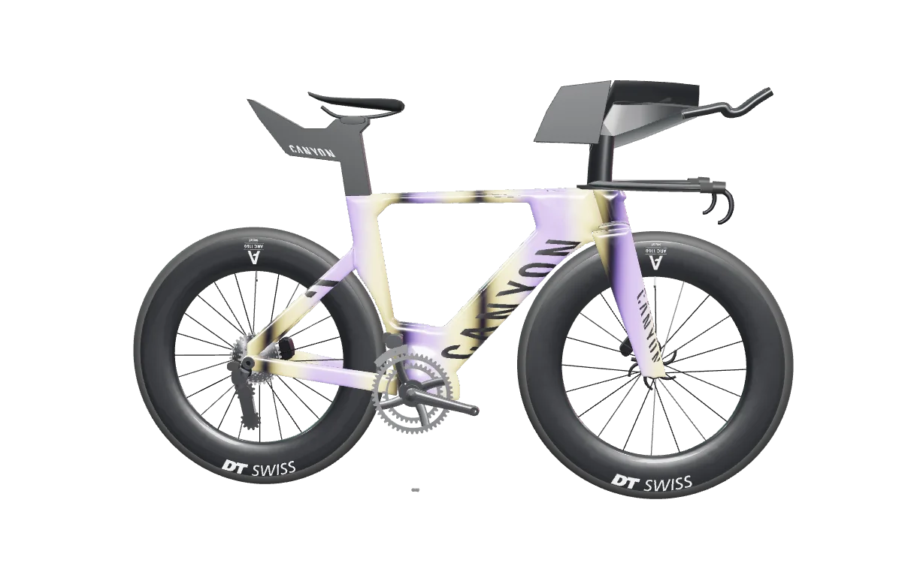
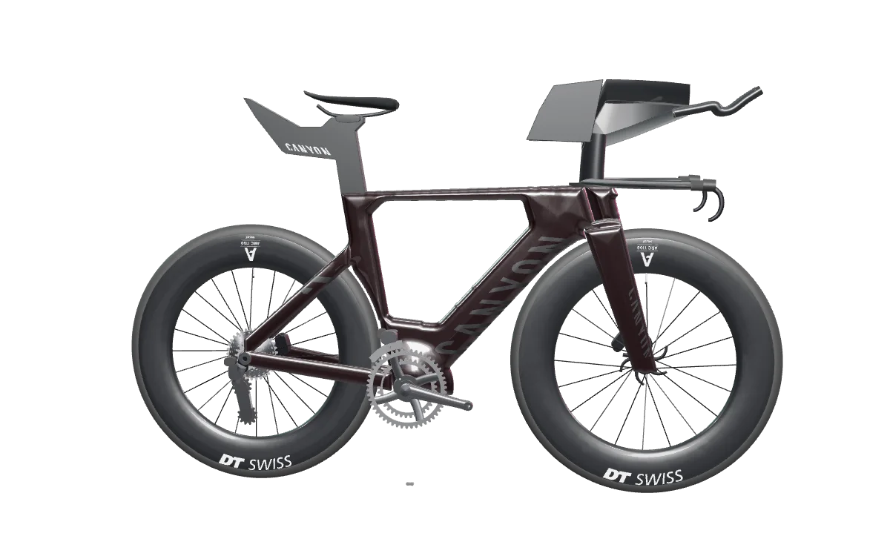

Now
Race-week context, the latest useful things, Plan, the Feed and the next thing worth your attention. Not an infinite dashboard.
KONA.M / FIELD GUIDE / NOW
Kona.m is an evolving endurance world for the practical stuff, the emotional stuff, the bikes, the stories and the strange detours in between.
Right now: build your Race Self, see what matters around race week, collect equipment and finds, explore stories and places, and go deeper into 3D only when you want to.
Also true: we are still figuring out what the best version of this becomes. That part is not a bug. It is approximately the operating model.
the intern has finally been given a four-word status taxonomy. morale is mixed.
00 / WHAT KONA.M IS
You should not need a strategy deck to understand the app. Start with what matters now. More appears as it becomes useful.
Wired into Kona.m today.
LABReal prototype or separate experiment.
NEXTDirection we are actively exploring or building.
UNKNOWNInteresting enough to keep the question mark.
Race-week context, the latest useful things, Plan, the Feed and the next thing worth your attention. Not an infinite dashboard.
Race Self, avatar, races, equipment, Garage, progress and the history you gradually build. Local-first by default.
Discover, stories, finds, bikes, rooms and optional 3D. The world gets larger as you use it instead of arriving as a 47-button tax form.
the short version: useful first, weird second, deeper when earned.
WHY KONA.M EXISTS / PICK YOUR VERSION
The beginning was much smaller than the app. A return to triathlon, encouraged by someone close, created a need to make training and racing feel understandable again.
The first solution was an Excel sheet. Then AI made building things feel possible. Bikes became 3D bikes. One room became a museum. The museum escaped and became a world. There was never a master plan; there was a habit of following the next useful question far enough to learn something new.
That matters because it explains the product: Kona.m is about becoming, not merely tracking. Pick how much of the origin story you can tolerate.
A return to triathlon needed structure. The first product was an Excel sheet.
Then the sheet acquired bikes, rooms and, somewhat irresponsibly, an island. That escalated → 02 ~ 1 MINUTETraining → spreadsheet → AI → bikes → 3D bikes → room → museum → island.
The next useful puzzle kept becoming the product. Take the scenic route → 03 HONESTLY, WHO KNOWS?Side quest. Side quest. Completely unnecessary detail that is now absolutely essential. Side quest.
Somehow it became fun to learn again. Enter carefully →I am all ears.
Kona.m is still becoming whatever it is. Feedback, weird ideas, broken buttons and “what if…” suggestions are useful fuel.
01 / START HERE
Mostly because there is no public account registration yet. Kona.m starts on your device, keeps the first-run profile local, and lets you get to the interesting bits before anyone asks for a password.
yes, the website is demonstrating itself inside itself. the intern discovered iframes.
Tap Enter Kona.m. Public email sign-in is currently unavailable, so the correct onboarding strategy is gloriously simple: continue without an account.
Racing, supporting, dreaming, or following a bike somewhere. The onboarding stores your answers on-device and awards progression XP.
The first machine uses the same canonical equipment record as Garage and Collection. Choosing it is a Kona.m collection choice, not a claim that you own the physical bike.
Avatar, race identity, equipment, finds and progression are local-first. The app gets deeper as those things become meaningful.
Now is deliberately small. Discover, Garage, Plan and Me reveal through canonical state instead of demanding attention on minute one.
01 / HOW TO PLAY
Start small. There is no rigid path, but there is also no reason to show you the whole universe on day one. The product unfolds through use.
Build an athlete identity, choose a bike and decide what you are training or dreaming toward.
NOW USER STUDIOMove between race places, stories and reconstructed worlds. Some are useful. Some are just fun.
NOW DISCOVER + WORLDCollect finds, equipment, artifacts, badges and stamps. Keys and richer room-access mechanics are still being wired.
NOW COLLECTIONSRace planning and race-week context are live. Connected training and performance intelligence are being explored through separate systems.
NEXT PERFORMANCENavigation, finds and progression already respond to state. The fuller key, quest and room-access economy is still expanding.
NOW + NEXT PROGRESSIONLAB / VISUAL REFERENCE
These are real captured states from the separate studio-kona world prototype and bike experiences. Some compositions are intentionally ahead of the current consumer UI; we use them as design references rather than pretending they are all live screens inside Kona.m.

Start with the overview. Find the pier, the route, the places, then zoom your attention into whichever thing looks most clickable.
Repository-backed captures, not concept art. The linked prototypes are real; the exact composition may be a lab reference rather than today's Kona.m consumer surface.
06 / THE INTERN'S MANUAL
The Intern is still learning how to program. This would be easier if he were not also Product, 3D, QA, Marketing, PR, IT, Support, Customer Service, Documentation, Maintenance and the person expected to know why your button did that.
You do not need to understand everything. Pick an identity, choose a machine, then follow whichever thing looks interesting. The app is intentionally more playground than spreadsheet.
If you are already clicking random things, excellent. Tutorial complete.
There are no wrong answers. There are several questionable ones.
“Us” is doing substantial work in that sentence.
Home tells you what matters now. Discover is where stories and places live. Garage is equipment. Plan is where the serious athlete briefly appears. Me remembers what you have done.
Worst case: go to Now. This is also my debugging strategy.
You are not expected to consume everything. Follow a bike. Read one weird story. Enter a room. Leave. Come back later. The world should feel slightly larger than the amount of time you have.
Also please report broken buttons. I apparently made those too.
04 / THE FOUNDING 141
CANONICAL / EXPANDING The Founding 141 is the world-scale collection model: 14 founding rooms × 10 collectibles, plus one roomless oddity called The Point Six. Parts are already findable; the full 141 are not yet all wired into the playable consumer surface.
Some things are simply somewhere. This is the suspiciously reasonable category.
Some things reward looking properly rather than moving quickly.
Finds and progression already answer back. Richer quests and mastery systems are the next layer.
Not everything is wired or obtainable immediately. The intern has learned the dangerous power of a roadmap.
06 / FEATURES, APPARENTLY
No concept art in this reel. These are existing Kona.m visual assets and live surfaces, rearranged into a slightly overdramatic product trailer.




show enough to make you curious. hide enough to make you click.
05 / THE WORLD
So the project escaped the museum and started becoming places.
NOW KONA WORLD
The emotional and geographic center of the experiment. Race week, equipment, memory, discovery and the question that started the whole thing.
Enter Kona.m ↗06.5 / THINGS TO TOUCH
A product should demonstrate its ideas rather than hide them inside a slide deck.
GARAGE
Models become objects, objects become collections, and collections eventually become stories you can ride through.
HIDDEN ROOMS
Keys, guesses, timed access and strange doors give the world a reason to stay surprising.
PROGRESSION
Stamps, finds, badges and artifacts turn exploration into a personal trail through the system.
PERFORMANCE
Performance OS explores how training, recovery, observations and predictions can become a useful feedback loop.
WHY KONA.M EXISTS
I am proud of where this is now. That matters before the explanation gets complicated.
For a while, finishing something felt more important than knowing exactly what it would become. Pieces had been scattered across projects and years, and this arrived during a hard stretch. Finishing it did not solve everything. It did prove I could still bring the pieces together.
There is a smaller version of the same story. I once had a package waiting to be delivered for more than a week. Then I counted: 5 · 4 · 3 · 2 · 1. I picked it up and moved. The visible action took seconds. The time before it was much longer. Some of that was friction; some of it may also have been preparation. Either way, those five seconds turned everything before them into movement.
Kona.m feels like that at a different scale. Years of experiments, unfinished ideas, bikes, software, AI, rooms and worlds finally converged into one thing I can look at and feel satisfied with.
That does not mean stopping. It means I no longer need to know exactly what comes next in order to be glad I got here.
The whole map does not have to be clear. Sometimes the next five seconds are enough.
Read the longer story →06 / THE LAB
These are not unrelated side projects. They are different tests of the same question: what becomes possible when software can see, reason, remember, generate and inhabit space?
ENTER THE WORLD
Triathlon as a place you can enter: athlete identity, bikes, stories, collections, race-week context and experiments.
Enter project ↗ LIGHT · MATERIAL · FORM
LIGHT · MATERIAL · FORM
An interactive katana modeled in Blender and rendered live in-browser, exploring material, light and object storytelling.
Open experience ↗

 WEBSITES YOU CAN WALK INTO
WEBSITES YOU CAN WALK INTO
A museum of visual, generative and interactive experiments: websites as rooms, objects as interfaces, and prototypes that are allowed to become strange before they acquire obligations.
Visit studio ↗ KONA · VEGAS · ST. GEORGE · NICE
KONA · VEGAS · ST. GEORGE · NICE
A spatial sandbox for Kona, Las Vegas, St. George and Nice: geography, memory, race context and browser-native 3D.
Enter world ↗Synthetic values for visualization only. No personal health or training data is shown.
A separate authenticated experiment in personal performance intelligence: training, health signals, prediction, observations and feedback. It informs possible future Kona.m performance work; it is not the current Kona.m training layer.
Open access layer ↗Training worlds. Generated races. Adaptive coaching. Digital twins. Multiplayer experiments. Or none of those. The question mark stays.
Still building.07 / UNDER THE HOOD
Tap a system to see how the experiments connect.
SYSTEM / KONA.M
The layer where worlds, identity, equipment, stories, progression and experiments meet.
08 / BUILD LOG
The failures belong here too. They are often where the reusable knowledge comes from.
Once objects existed in 3D, static pages started feeling suspiciously flat.
Avatars, identity, equipment and progression arrived because places feel different when you belong in them.
Performance budgets, streaming, asset discipline and mobile constraints stopped being theory.
09 / WHAT THIS COULD BECOME
Interactive equipment, digital twins, exploded views, collectibles, stories and commerce without turning everything into an ad.
Race stories, equipment histories, challenges and personal worlds that preserve more than a highlight reel.
Virtual courses, destination storytelling, preparation, discovery and digital souvenirs tied to real places.
The project is independent and unofficial. Referenced brands, athletes and events do not imply affiliation, sponsorship or endorsement.
08 / BUILD SOMETHING TOGETHER
Brands, athletes, events, tourism, 3D products, AI experiments, interactive stories, strange rooms, useful systems, or something we have not named yet.
If you think there is something worth building together, write to konamundo@gmail.com. A clear idea is helpful. A weird but defensible idea is also helpful.
The Finance department has confirmed that servers, software and coffee continue to reject payment in pure enthusiasm.
If this is better discussed face-to-face in Kona, flights and accommodation are a perfectly acceptable way to move the meeting there. I will bring a laptop.
Useful feedback, partnerships, source material, access, expertise and “you should talk to this person” messages can be more valuable than another feature request.
Independent project. Collaboration invitations do not imply any existing sponsorship, endorsement or affiliation.
10 / FAQ
Support hours: whenever the intern notices the problem.
Partly. It borrows progression, discovery, identity and collectibles from games, but it also behaves like a museum, training companion, travel guide and experiment platform.
Not in the conventional sense today. Race planning and race-week context are live; connected training and performance intelligence are a future layer being explored through separate experiments. The broader idea is to connect practical endurance sport with the emotional, historical and playful sides.
Kona is both a real place and a powerful symbol inside long-course triathlon. For this project it became the anchor point for equipment, race-week memory, aspiration and exploration.
Today: finds, equipment, artifacts, stamps and badges. The Founding 141 is the canonical world-scale collection and is still being wired into the playable world. Access items and richer room gating are next-layer mechanics, not a promise that every key already works.
Rooms and progression are real. The fuller key, clue and occasional guessing-challenge system is a roadmap mechanic still being built, not a fully live access system today.
Across generation, agents, personalization, knowledge, analysis and future world behavior. The project treats AI as a capability layer rather than a decorative chatbot.
No. Kona.m is an independent, unofficial fan and research project. Trademarks and product names belong to their respective owners.
Kona.m is an independent project. The Intern is its narrator and intentionally unreliable org chart: Engineering, 3D, product, support, copy, maintenance and coffee logistics all appear to report to him. Please do not use this paragraph for due diligence.
Enough to exist. Not enough to stop changing. That balance is intentional. The intern calls this “production.”
First, try once more with conviction. If it still does nothing, that is a bug rather than a philosophical feature. Return to Now, continue exploring, and treat the broken button as a tiny contribution to quality assurance.
The same intern who handles engineering, design, maintenance, copy, coffee and an occasionally neglected training schedule. Expectations should therefore be ambitious but elastic.
No. Public account registration is not required. Start without an account; the current first-run profile and passport are local-first. A coach remains optional. Blood oaths are outside the product roadmap.
No. Kona.m progression is a game layer. It does not alter any real-world race qualification, ranking or entry process. It may, however, make you unusually determined to inspect virtual objects.
The org chart says yes. The org chart was made by the Intern. Please interpret this evidence responsibly.
Because every interface problem eventually becomes a bike problem if you leave the Intern alone long enough.
The Finance department has raised concerns. Cash is easier. If the project genuinely benefits from being discussed in Kona, flights and accommodation are also a highly specific way to get the laptop and its operator there.
END OF FIELD GUIDE / START OF SOMETHING ELSE
Start with what matters. Build your athlete. Follow a bike. Find something you were not looking for.
the useful part might be the part we haven't named yet.